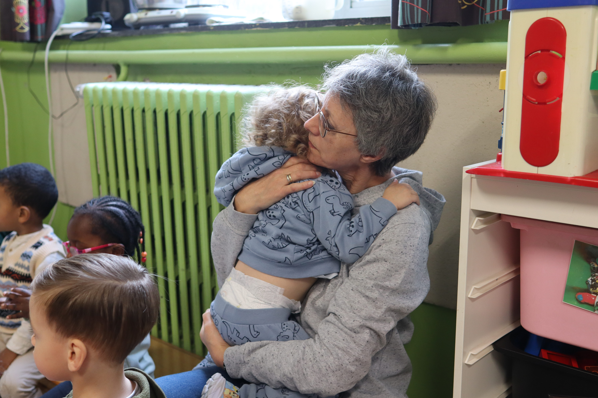
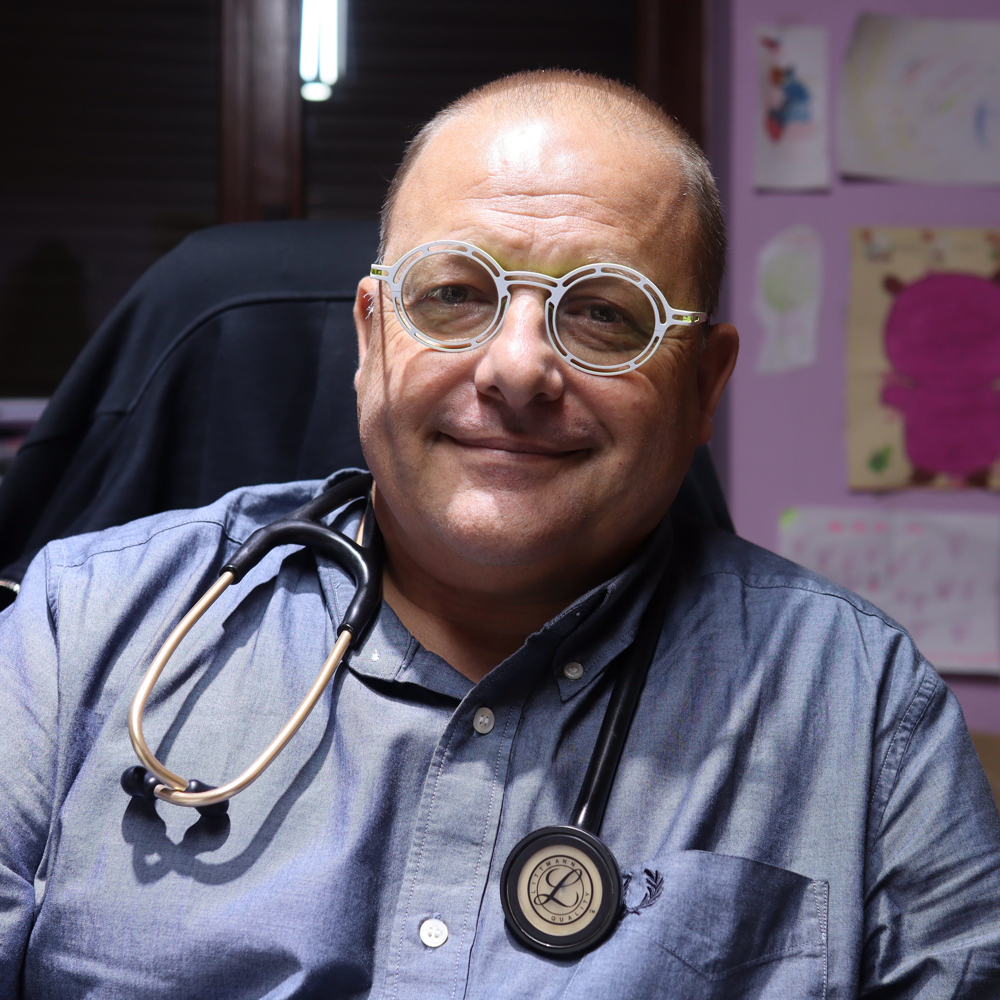
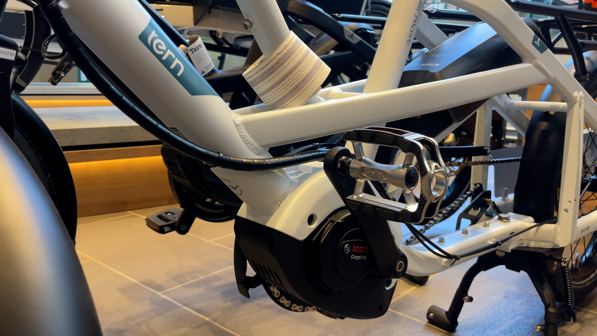
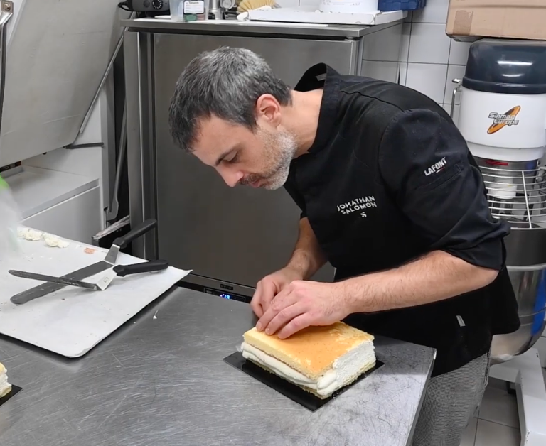
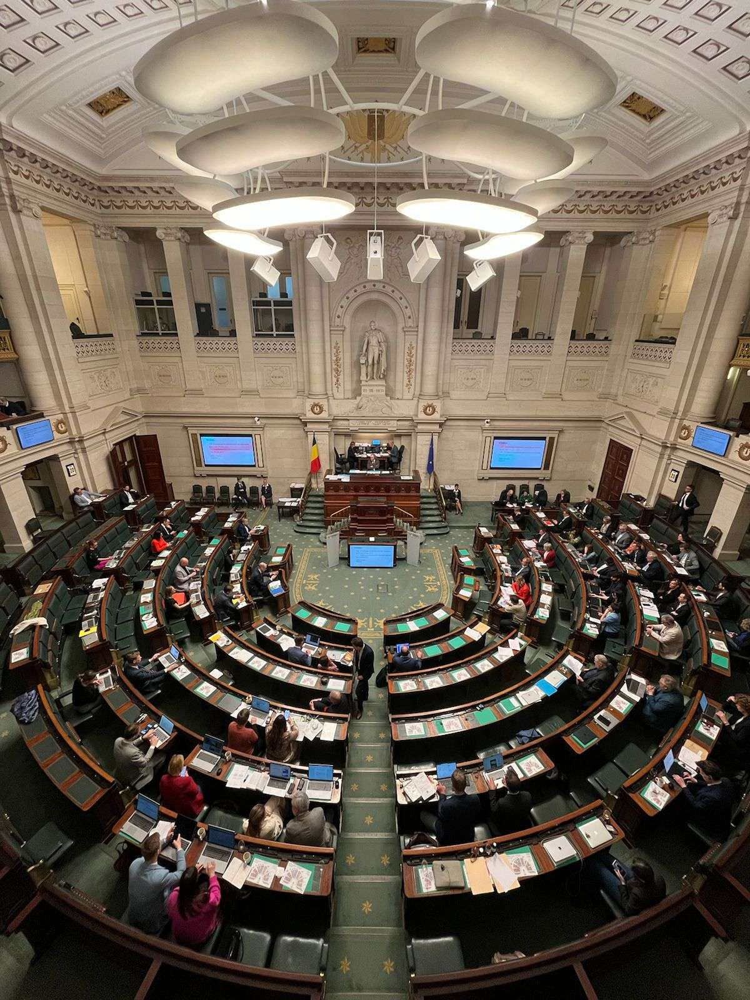
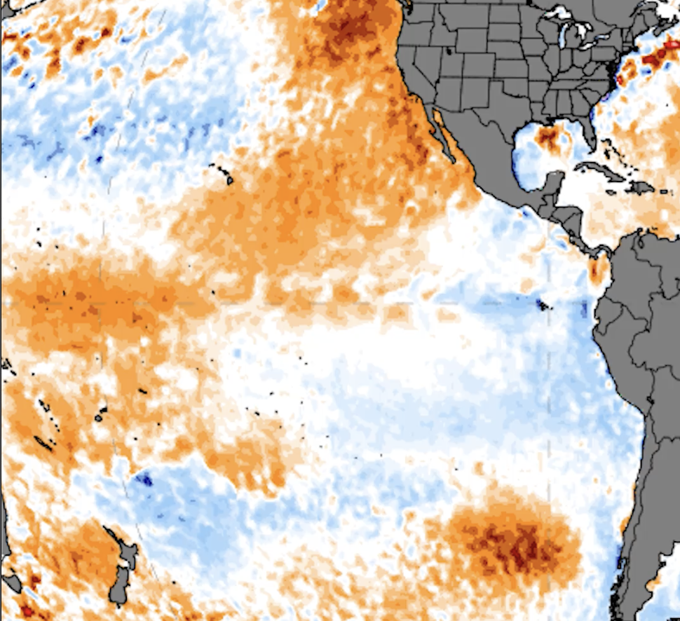

Julien Gillet, portfolio 2026
Présentation :
Une petite vidéo pour me présenter ainsi que mes compétences.
Mammouth Média :
Cette section reprend des articles et des reportages vidéos réalisés lors des ateliers pratiques de ma première année de Master (2025 – 2026)

Portrait Puéricultrice : le couteau suisse de l’enseignement Une part d’enseignante mixée avec une part d’éducatrice et un soupçon d’infirmière, c’est la description parfaite du métier de puéricultrice. Depuis 28 ans, Madame Anne accompagne les plus petits dans une école du quartier des Vennes à Liège. 08/12/2025 Explainer Ukraine : Quels sont les territoires sacrifiés par le plan de partage américain ? Le plan de partage américain sur l’Ukraine, qui fait actuellement l’objet d’intense tractations diplomatiques, pourrait faire perdre au pays de larges pans de son territoire. 12/12/2025
Interview Jean-Michel Labasse : soigner mais à quel prix ? Dans la région de Juprelle, où trouver un médecin généraliste devient un défi, Jean-Michel Labasse poursuit ses journées jusque tard dans la nuit pour ses patients. 19/12/2025
Reportage Les vélos cargo, un essor à plusieurs vitesses Entre 2022 et 2024, le vélo cargo a connu un pic de popularité et une augmentation des ventes de près de 66% à Bruxelles. Mais pourquoi ce moyen de transport est-il privilégié aujourd’hui dans la capitale ? 10/02/2026
Portrait Jonathan Salomon : portrait d’un pâtissier Révélation 2026 de la pâtisserie chez Tartines et Boterham, Jonathan Salomon incarne la rigueur, la précision et l’amour du travail bien fait. Entre gestes maîtrisés et quête de perfection, il nous ouvre les portes de sa passion et de son univers gourmand. 18/03/2026
Data Qui a posé le plus de questions parlementaires en 2025 ? Près de 14.000 questions ont été posées en 2025 par les élus fédéraux. Mammouth a analysé toutes les questions écrites et orales de l’année passée, et a découvert que certains députés gonflaient artificiellement leurs statistiques. 22/04/2026
Explainer Comprendre El Niño en 2 minutes El Niño est un phénomène climatique au cours duquel les eaux de surface de l’océan Pacifique central et oriental connaissent un réchauffement anormal, provoquant des dérèglements météorologiques à travers le monde. 13/05/2026 Reportage La foi tutélaire des arméniens bruxellois Ils étaient marchands de tapis ou joailliers, ils sont maintenant couturiers, avocats ou commerçants. De la fin du XIXème siècle jusqu’aux réfugiés des crises récentes, les Arméniens ont bâti leur survie sur un équilibre : la transmission. 19/05/2026Enquête d’un toit :
Enquête d’un toit est un projet de mémoire médiatique par groupe à rendre pour janvier 2027. Pour les réseaux sociaux, je suis responsable des tournages et du montage des vidéos de promotion / explainer.